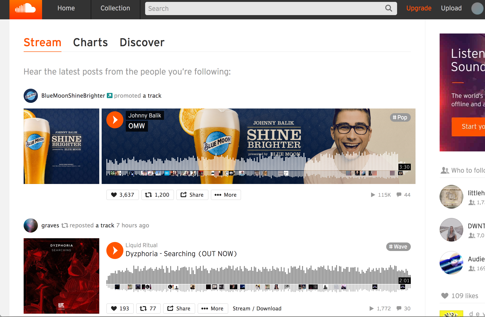
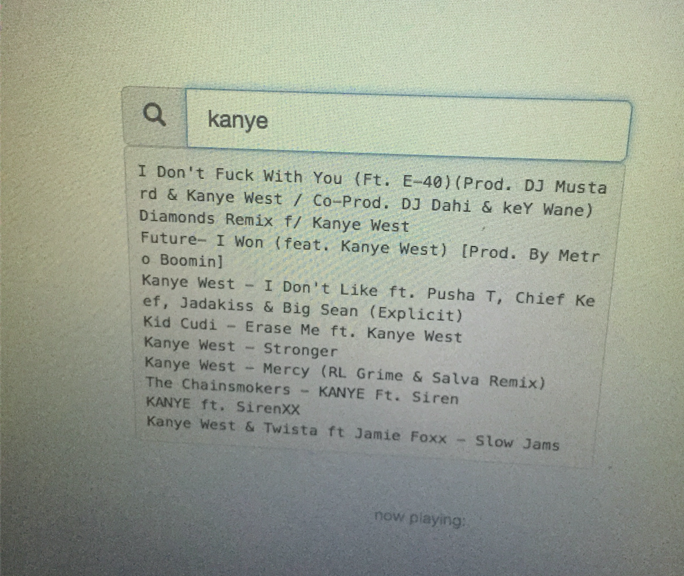

purify
Background
Purify (stylized with no caps as purify) was born during the 2016 TartanHacks at Carnegie Mellon University. I worked with two other project members, one of whom I worked with on the coding aspect of the project, and the other who was in charge of the design and interface.
Inspiration
We wanted to make a a web application related to music, and drew inspiration from our own experiences with SoundCloud, an online platform that allows users to listen to, upload, and share music with each other. When users log in to SoundCloud, they have a feed of music that was either shared by or uploaded from the users they are following. Thus, when listening to one’s feed, it is hard to control what kind of music is played. For example, if someone wanted to listen to their feed while studying, since the music on the feed can’t be filtered to a specific genre or BPM, not every song would be conducive to studying.

As shown above, there is no option to filter a user’s feed.
Based on this predicament, we decided to make an app that would allow users to search for a song, then filter the user’s feed based on certain qualities of the selected song, such as genre, artist, BPM, etc.
Technologies
We decided to try to use Node.js and build it on top of an Express framework, since neither of us two coders had ever used Javascript before. We struggled a lot initially trying to get started with downloading and setting up our project. Using the SoundCloud API, we found, was relatively straight forward. As soon as we acquired the access token we were able to dive in to using the API.
On the other hand, getting used to Javascript syntax was a bit challenging at first, but as soon as we knew what we wanted our code to do, it was easy to find and use the necessary function calls to do what we had in mind. In the end, we were able to have the user login to their SoundCloud account, and had a basic live search working; the designer on our team mainly used CSS and Bootstrap to help style the app.

Reflection
Although we weren’t able to finish and deploy our app by the time the hackathon ended, I still value the experience that I gained in making this app. It had been my first hackathon and my first exposure to web development. I gained experience in learning to use new technologies, and it was also fun to stay up late at night coding with my friends on a project we were all interested in!
Source Code
Can be found on Github.